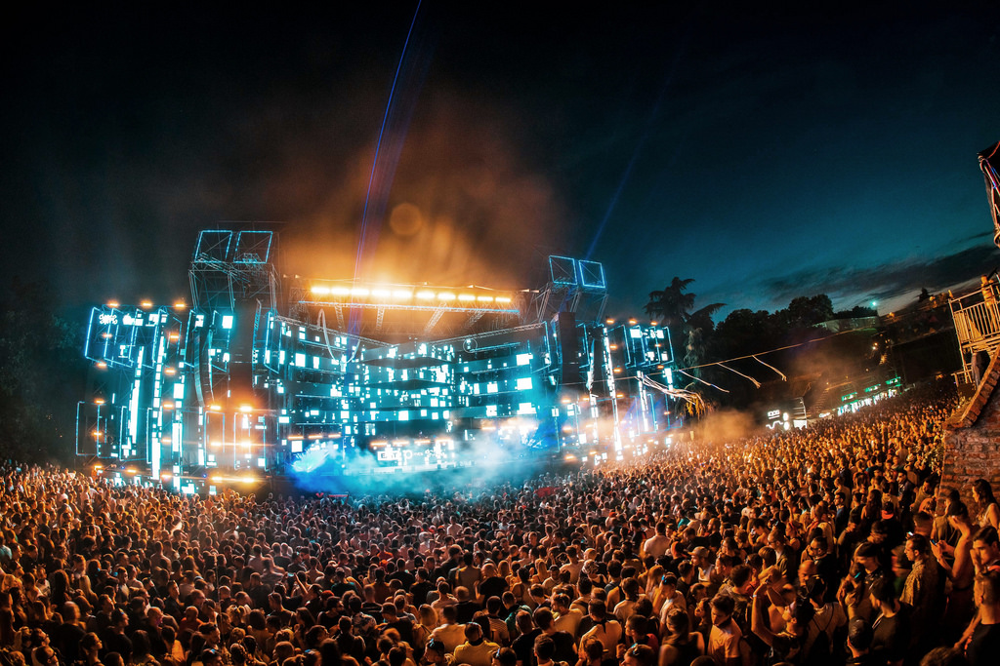

Eco Fest
Eco Fest
About Eco Fest
If you're passionate about music, Eco Fest is the perfect place to be. Eco Fest combines the passion of music with the passion of saving the environment, resulting in a fun, family-friendly day out.
The main focus of the festival is to showcase the best acts and musicians, while making sure to have a minimal effect on the environment.

The festival will take place on the third Saturday of July, in Hyde Park, London. Further location and contact details can be found in the information page.